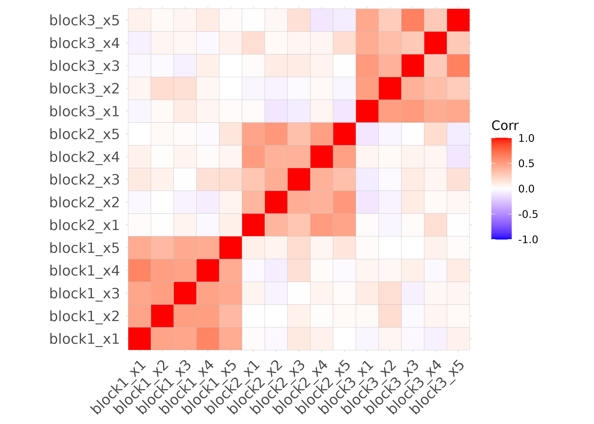
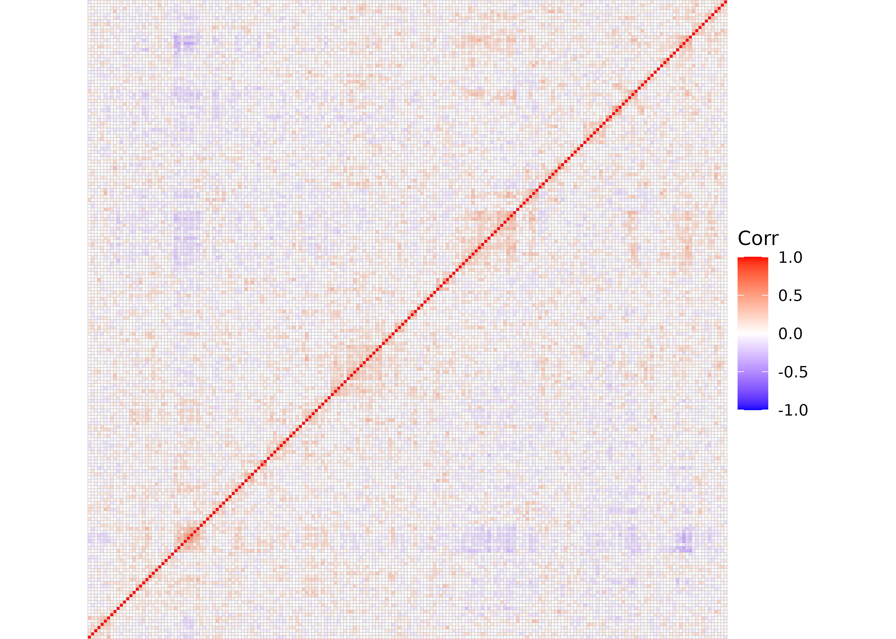

vignettes/introduction-to-partition.Rmd
introduction-to-partition.Rmdpartition is a fast and flexible data reduction framework for R (Millstein et al. 2020). There are many approaches to data reduction, such as principal components analysis (PCA) and hierarchical clustering (both supported in base R). In contrast, partition attempts to create a reduced data set that is both interpretable (each raw feature maps to one and only one reduced feature) and information-rich (reduced features must meet an information constraint). Reducing the data this way often results in a data set that has a mix of raw features from the original data and reduced features.
partition is particularly useful for highly correlated data, such as genomic data, where there is a lot of redundancy. A simple model of say, gene expression data could be block correlated Gaussian variables. simulate_block_data() simulates data like this: blocks of correlated data that are themselves independent of the other blocks in the data.
library(partition)
library(ggplot2)
set.seed(1234)
# create a 100 x 15 data set with 3 blocks
df <- simulate_block_data(
# create 3 correlated blocks of 5 features each
block_sizes = rep(5, 3),
lower_corr = .4,
upper_corr = .6,
n = 100
)In a heatmap showing the correlations between the simulated features, blocks of correlated features are visible:
ggcorrplot::ggcorrplot(corr(df))
Many types of data follow a pattern like this. Closely related to the block correlation structure found in genetic data is that found in microbiome data. The data set baxter_otu has microbiome data on 172 healthy patients. Each row represents a patient, and each column represents an Operational Taxonomic Unit (OTU). OTUs are species-like relationships between bacteria determined by analyzing their RNA. Each cell in the dataset represents the logged-count of an OTU found in a patient’s stool sample, with 1,234 OTUs in all.
baxter_otu
#> # A tibble: 172 x 1,234
#> otu_1 otu_2 otu_3 otu_4 otu_5 otu_6 otu_7 otu_8 otu_9 otu_10 otu_11 otu_12
#> <dbl> <dbl> <dbl> <dbl> <dbl> <dbl> <dbl> <dbl> <dbl> <dbl> <dbl> <dbl>
#> 1 0 0 0 1.39 0 0 0 0 0 2.08 0 0
#> 2 2.48 0 0 0 0 0 0 0 0 0 0 0
#> 3 1.10 0 0 3.26 0 0 0 0 0 0 0 0
#> 4 1.39 0 0 1.10 0 1.10 0 0 0 0.693 0.693 0
#> 5 0 0 0 3.00 0 0 0 0 0 0 0 2.40
#> 6 0 0 0 0 0 0 0 0 0 0 0 0
#> 7 0 0 0 0 0 0 0 0 0 0 0 0
#> 8 0 0 0 0 0 0 0 0 0 0 0 0
#> 9 0 0 0 0 0 0 0 0 0 0 0 1.79
#> 10 1.39 1.79 0 0 0 0 0 0 0 0 0 0
#> # … with 162 more rows, and 1,222 more variables: otu_13 <dbl>, otu_14 <dbl>,
#> # otu_15 <dbl>, otu_16 <dbl>, otu_17 <dbl>, otu_18 <dbl>, otu_19 <dbl>,
#> # otu_20 <dbl>, otu_21 <dbl>, otu_22 <dbl>, …While not as apparent as simulated data, correlated blocks also appear in these data; bacteria tend to group together into communities or cliques in the microbiomes of participants. Here are the first 200 OTUs:
correlation_subset <- corr(baxter_otu[, 1:200])
ggcorrplot::ggcorrplot(correlation_subset, hc.order = TRUE) + ggplot2::theme_void()
Because there are many more features (OTUs) in these data than rows (patients), it’s useful to reduce the data for use in statistical modeling. The primary function, partition(), takes a data frame and an information threshold and reduces the data to as few variables as possible, subject to the information constraint.
prt <- partition(baxter_otu, threshold = .5)
prt
#> Partitioner:
#> Director: Minimum Distance (Pearson)
#> Metric: Intraclass Correlation
#> Reducer: Scaled Mean
#>
#> Reduced Variables:
#> 63 reduced variables created from 158 observed variables
#>
#> Mappings:
#> reduced_var_1 = {otu_663, otu_879}
#> reduced_var_2 = {otu_556, otu_662}
#> reduced_var_3 = {otu_269, otu_714}
#> reduced_var_4 = {otu_200, otu_989}
#> reduced_var_5 = {otu_148, otu_704}
#> reduced_var_6 = {otu_75, otu_1111}
#> reduced_var_7 = {otu_793, otu_986, otu_1088}
#> reduced_var_8 = {otu_234, otu_1165}
#> reduced_var_9 = {otu_160, otu_636, otu_830}
#> reduced_var_10 = {otu_232, otu_1141}
#> ...with 53 more reduced variables
#>
#> Minimum information:
#> 0.5For the microbiome data, partition() reduced 158 of the OTUs to 63 reduced features. The other 1,076 OTUs were not reduced because doing so would have removed too much information from the data. partition() creates a tibble with the newly reduced features, as well as any features that were not reduced, which you can get with partition_scores():
partition_scores(prt)
#> # A tibble: 172 x 1,139
#> otu_1 otu_2 otu_3 otu_4 otu_5 otu_6 otu_7 otu_8 otu_9 otu_10 otu_11 otu_12
#> <dbl> <dbl> <dbl> <dbl> <dbl> <dbl> <dbl> <dbl> <dbl> <dbl> <dbl> <dbl>
#> 1 0 0 0 1.39 0 0 0 0 0 2.08 0 0
#> 2 2.48 0 0 0 0 0 0 0 0 0 0 0
#> 3 1.10 0 0 3.26 0 0 0 0 0 0 0 0
#> 4 1.39 0 0 1.10 0 1.10 0 0 0 0.693 0.693 0
#> 5 0 0 0 3.00 0 0 0 0 0 0 0 2.40
#> 6 0 0 0 0 0 0 0 0 0 0 0 0
#> 7 0 0 0 0 0 0 0 0 0 0 0 0
#> 8 0 0 0 0 0 0 0 0 0 0 0 0
#> 9 0 0 0 0 0 0 0 0 0 0 0 1.79
#> 10 1.39 1.79 0 0 0 0 0 0 0 0 0 0
#> # … with 162 more rows, and 1,127 more variables: otu_13 <dbl>, otu_14 <dbl>,
#> # otu_15 <dbl>, otu_16 <dbl>, otu_17 <dbl>, otu_19 <dbl>, otu_20 <dbl>,
#> # otu_21 <dbl>, otu_22 <dbl>, otu_23 <dbl>, …In comparison, PCA produces a data set of the same dimensions of the original data where all original variables map to all new components in some amount. While components are organized by their informativeness (the first component explains the most variance), no original features are retained.
pca <- prcomp(baxter_otu)
# print the results more neatly
tibble::as_tibble(pca$x)
#> # A tibble: 172 x 172
#> PC1 PC2 PC3 PC4 PC5 PC6 PC7 PC8 PC9 PC10
#> <dbl> <dbl> <dbl> <dbl> <dbl> <dbl> <dbl> <dbl> <dbl> <dbl>
#> 1 -7.52 5.45 -1.43 1.38 -3.75 6.94 -6.89 4.95 -1.80 2.66
#> 2 1.62 -4.42 14.9 2.40 3.95 4.30 3.63 -5.84 -1.31 2.78
#> 3 -9.97 -5.05 -10.2 -0.628 6.36 3.79 0.614 -1.17 1.68 1.28
#> 4 -10.6 3.91 -1.78 -2.91 1.03 7.24 0.528 8.40 8.26 2.89
#> 5 -16.2 -4.19 2.76 9.84 1.79 1.62 -6.23 -0.543 4.11 1.63
#> 6 14.6 0.339 -0.0895 4.11 -1.61 -7.36 5.92 0.735 -6.61 2.08
#> 7 4.84 -5.08 3.34 -2.74 -2.57 -2.13 6.25 0.858 -1.22 -2.78
#> 8 -14.2 -7.79 5.29 8.99 -2.38 -0.718 0.0578 -0.676 -2.19 3.13
#> 9 -5.47 -3.48 -1.86 -4.15 -2.62 -0.510 4.94 -9.12 5.12 -0.126
#> 10 -11.8 9.68 -0.394 4.92 -1.20 -4.57 -6.54 -2.72 6.81 0.181
#> # … with 162 more rows, and 162 more variables: PC11 <dbl>, PC12 <dbl>,
#> # PC13 <dbl>, PC14 <dbl>, PC15 <dbl>, PC16 <dbl>, PC17 <dbl>, PC18 <dbl>,
#> # PC19 <dbl>, PC20 <dbl>, …Notably, these approaches can be easily combined (see below).
partition uses an approach called Direct-Measure-Reduce to create agglomerative (bottom-up) partitions that capture the user-specified minimum level of information. Each variable starts as an individual partition subset, and candidate partition subsets are assessed by verifying that the minimum information is captured in the reduced variable. Reduced variables are easily interpretable because original variables map to one and only one variable in the reduced data set. The partition software is flexible and customizable in the way features are agglomerated, information is measured, and data are reduced.
In this partition, 63 reduced features consist of two to seven features each, as well as 1,076 of the original features that did not get reduced because reducing them would lose too much information. Here are the top 20 clusters, ordered by how many raw features they represent:
plot_ncluster(prt, show_n = 20) +
# plot_*() functions return ggplots, so they can be extended using ggplot2
theme_minimal(14)Each reduced feature explains at least 50% of the information of the original features that it summarizes. The distribution of information has a lower limit of our threshold, .5.
plot_information(prt, geom = geom_histogram) +
theme_minimal(14)
Retrieve a key for these mappings and the information each feature explains with mapping_key(), which returns a nested tibble.
mapping_key(prt)
#> # A tibble: 1,139 x 4
#> variable mapping information indices
#> <chr> <list> <dbl> <list>
#> 1 otu_1 <chr [1]> 1 <int [1]>
#> 2 otu_2 <chr [1]> 1 <int [1]>
#> 3 otu_3 <chr [1]> 1 <int [1]>
#> 4 otu_4 <chr [1]> 1 <int [1]>
#> 5 otu_5 <chr [1]> 1 <int [1]>
#> 6 otu_6 <chr [1]> 1 <int [1]>
#> 7 otu_7 <chr [1]> 1 <int [1]>
#> 8 otu_8 <chr [1]> 1 <int [1]>
#> 9 otu_9 <chr [1]> 1 <int [1]>
#> 10 otu_10 <chr [1]> 1 <int [1]>
#> # … with 1,129 more rowsTo see each mapping, unnest them using unnest_mappings() (or do it yourself with tidyr::unnest())
unnest_mappings(prt)
#> # A tibble: 1,234 x 4
#> variable mapping information indices
#> <chr> <chr> <dbl> <int>
#> 1 otu_1 otu_1 1 1
#> 2 otu_2 otu_2 1 2
#> 3 otu_3 otu_3 1 3
#> 4 otu_4 otu_4 1 4
#> 5 otu_5 otu_5 1 5
#> 6 otu_6 otu_6 1 6
#> 7 otu_7 otu_7 1 7
#> 8 otu_8 otu_8 1 8
#> 9 otu_9 otu_9 1 9
#> 10 otu_10 otu_10 1 10
#> # … with 1,224 more rowsPartitioners are functions that tell the partition algorithm 1) what to reduce 2) how to measure how much information and 3) how to reduce the data. We call this approach Direct-Measure-Reduce. In partition, functions that handle (1) are thus called directors, functions that handle (2) are called metrics, and functions that handle (3) are called reducers. partition has many pre-specified partitioners, but this aspect of the approach is also quite flexible. See the vignette on extending partition to learn more about custom partitioners.
The default partitioner in partition() is part_icc(). part_icc() uses a correlation-based distance matrix to find the pair of features with the smallest distance between them; intraclass correlation (ICC) to measure information explained by the reduced feature; and scaled row means to reduce features with a sufficient minimum ICC. part_icc() is generally fast and scalable.
part_icc()
#> Director: Minimum Distance (Pearson)
#> Metric: Intraclass Correlation
#> Reducer: Scaled MeanThere are several other partitioners, which all have names in the format part_*()
| partitioner | direct | measure | reduce |
|---|---|---|---|
part_icc() |
Minimum Distance | ICC | scaled row means |
part_kmeans() |
K-Means Clusters | Minimum ICC | scaled row means |
part_minr2() |
Minimum Distance | Minimum R-Squared | scaled row means |
part_pc1() |
Minimum Distance | Variance Explained (PCA) | first principal component |
part_icc() |
Minimum Distance | Standardized Mutual Information | scaled row means |
To apply a different partitioner, use the partitioner argument in partition().
prt_pc1 <- partition(baxter_otu, threshold = .5, partitioner = part_pc1())
prt_pc1
#> Partitioner:
#> Director: Minimum Distance (Pearson)
#> Metric: Variance Explained (PCA)
#> Reducer: First Principal Component
#>
#> Reduced Variables:
#> 370 reduced variables created from 1203 observed variables
#>
#> Mappings:
#> reduced_var_1 = {otu_299, otu_720}
#> reduced_var_2 = {otu_301, otu_745}
#> reduced_var_3 = {otu_776, otu_1000}
#> reduced_var_4 = {otu_636, otu_992}
#> reduced_var_5 = {otu_545, otu_675, otu_1164}
#> reduced_var_6 = {otu_308, otu_967}
#> reduced_var_7 = {otu_266, otu_518}
#> reduced_var_8 = {otu_620, otu_819}
#> reduced_var_9 = {otu_255, otu_646, otu_1163}
#> reduced_var_10 = {otu_290, otu_387, otu_560, otu_993, otu_1045}
#> ...with 360 more reduced variables
#>
#> Minimum information:
#> 0.501Data sets with statistically independent variables reduce only at lower thresholds because variables can only be reduced if a substantial proportion of information is discarded. In this set of 10 independent variables, setting the threshold to 0.5 results in a partition with no reduction. partition() returns the original data.
# create a data.frame of 10 independent features
ind_df <- purrr::map_dfc(1:10, ~rnorm(30))
ind_part <- partition(ind_df, .5)
ind_part
#> Partitioner:
#> Director: Minimum Distance (Pearson)
#> Metric: Intraclass Correlation
#> Reducer: Scaled Mean
#>
#> Reduced Variables:
#> 0 reduced variables created from 0 observed variables
identical(ind_df, partition_scores(ind_part))
#> [1] TRUEComparing partitioning that occurs in our observed data to what occurs in data where all features are statistically independent gives us insight into the structure of dependencies in our data. We can make this type of comparison with the function plot_stacked_area_clusters(), which creates partitions for a series of information thresholds using both the observed data and a permuted (independent) version of the data. In the permuted version, each variable is randomly permuted relative to all other variables, thereby enforcing statistical independence. In general, there are many fewer reduced features for the real data than the independent data due to these dependencies; there is more common information across features in the real data.
plot_stacked_area_clusters(df) +
theme_minimal(14)partition also has a set of tools for more extensive permutation tests. map_partition() will fit partitions for a range of thresholds for the observed data; test_permutation() will do the same but also for a set of permuted data sets (100 by default). plot_permutation() visualizes the results, comparing information, number of clusters, or the number of raw features reduced.
perms <- test_permutation(df, nperm = 10)
perms
#> # A tibble: 6 x 9
#> target_info observed_info nclusters nreduced partition perm_observed_i…
#> <dbl> <dbl> <int> <int> <list> <dbl>
#> 1 0.1 0.119 1 15 <partiti… 0.110
#> 2 0.2 0.218 2 15 <partiti… 0.228
#> 3 0.3 0.395 3 15 <partiti… 0.935
#> 4 0.4 0.426 3 14 <partiti… 1
#> 5 0.5 0.501 4 10 <partiti… 1
#> 6 0.6 1 0 0 <partiti… 1
#> # … with 3 more variables: perm_nclusters <dbl>, perm_nreduced <dbl>,
#> # permutation <list>plot_permutation(perms, .plot = "nreduced") +
theme_minimal(14)
plot_ncluster() and plot_information(), in addition to plotting individual partitions, also plot the results of test_permutation().
Millstein, Joshua, Francesca Battaglin, Malcolm Barrett, Shu Cao, Wu Zhang, Sebastian Stintzing, Volker Heinemann, and Heinz-Josef Lenz. 2020. “Partition: A Surjective Mapping Approach for Dimensionality Reduction.” Bioinformatics 36 (3): 676–81. 10.1093/bioinformatics/btz661.